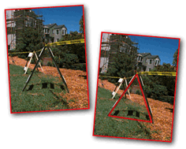
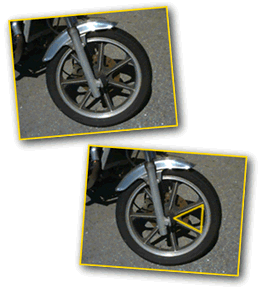
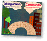

| |
Shape Walk |
In search of a shape:
Go for a walk in search of a shape. Look closely at things around you and bring a camera along to capture the shapes you see. We used a QuickTake camera on our walk, then we put our pictures into Kid Pix and outlined the shapes. -Kathy, Vicky and Marjie

Watch Shape Slide Shows:
Kathy, Vicky and Marjie (5MB)
This activity is included in the Shapes cluster developed with K-2 teachers at the Ross School in San Francisco.

|
What shapes are most common? Where are squares found in nature? Which is easier, finding shapes in natural or human made structures? Imagine a place that is made out of only one shape, draw a picture and write about this place. |
|
 |
|
|
||
|
||
|
|
||
 Gathered by topic |
 Connected together |
 Index of ideas |
 Search |